2
Beyond Thousand
Beyond Thousand The race is on.
Toto car is the first. See its number. 700
800
900
1000
19

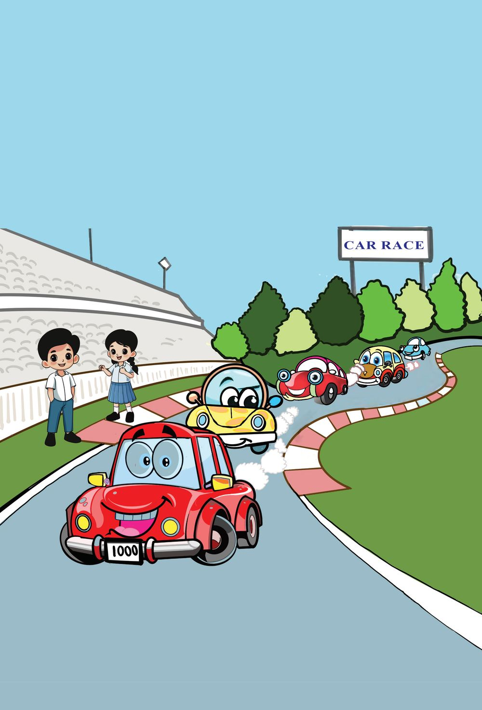
2
Beyond Thousand
Beyond Thousand The race is on.
Toto car is the first. See its number. 700
800
900
1000
19


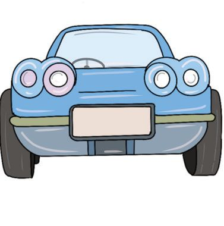

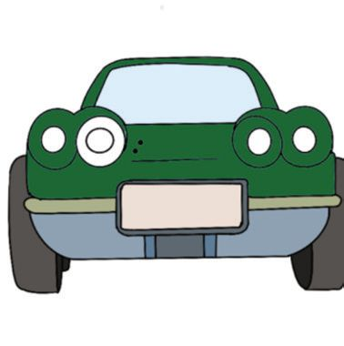
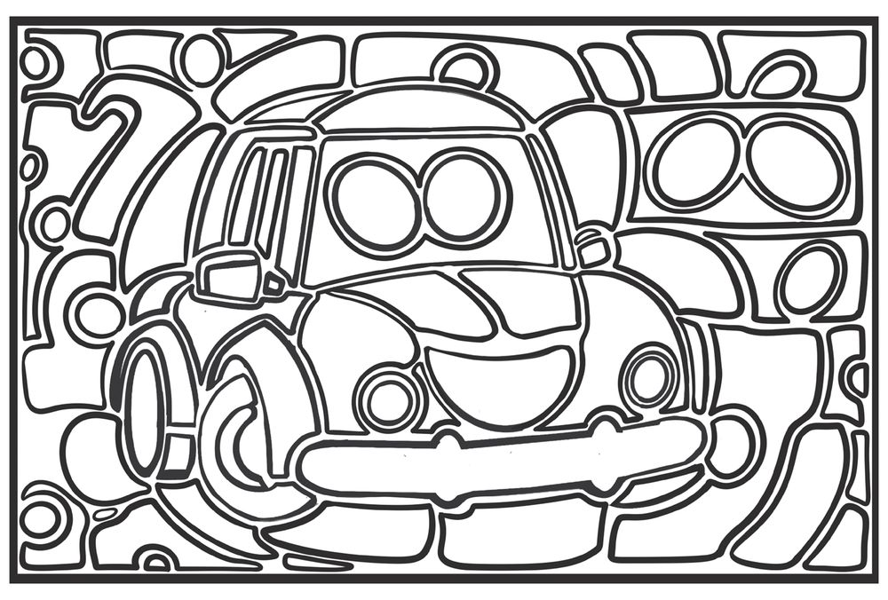
Mathematics
Standard - IV
Find the Relation Find the relation between the numbers and write the numbers in the empty cells. 9
100
........
199
........
500
........
909
........
999
10
101
110
........
280
........
667
........
990
........
Colour Toto Car
Find the numbers you have written in the picture below. Colour those parts.
99
5
666
666
499 666
6
66
910
501
908
200
109
200
279 200
601
198
102
910
111
279
989 1000 992
281
991
Number Plate These are the friends of Toto car. Find their numbers from the clues and write on their number plates. 8 Hundreds 4 Tens 2 Ones
20
One less than 910
The largest three-digit number
One more than the largest two-digit number


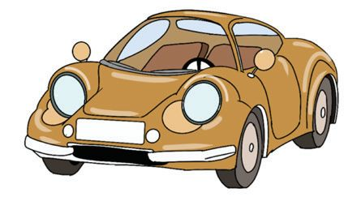
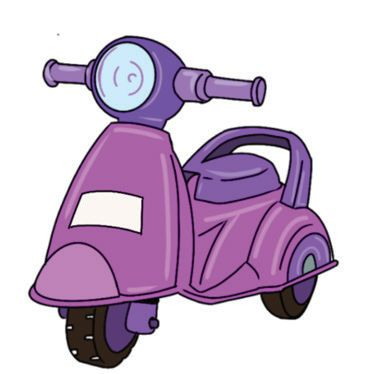


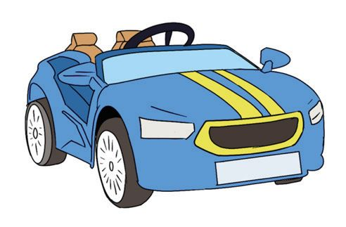


Beyond Thousand
Wow ! Thousand! My number is the smallest four-digit number.
Read my Number.
Join Them Find the pairs of vehicles whose numbers add up to Toto car’s number. Draw lines to join them.
505
250
999
100
750
1
990
495
900
10
Do it mentally and write the answers.
21


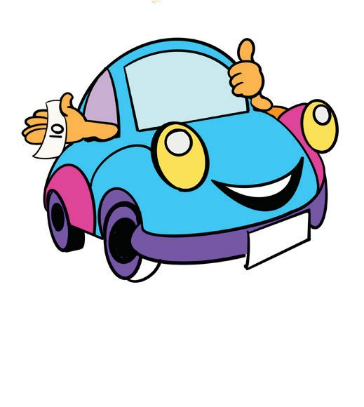
Mathematics
Standard - IV
Just One More! What is the number shown in the abacus? If we add one more? Thousands Hundreds
Tens
ones
Draw this number in the abacus.
Puzzle Corner
Who am I? One bead in the abacus. Larger than the largest three-digit number. Who am I? Which is my position in the abacus?
Thousands
Hundreds
Tens
ones
Petrol Pump Cars in the race filled petrol for 1000 rupees.
1000
Toto car gave 100 rupee notes. How many notes?
22
Tomo car gave a sheaf of 10 rupee notes. How many notes?
Buggy car gave 1 rupee coins. How many coins?

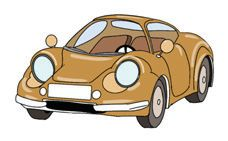
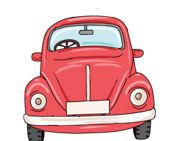


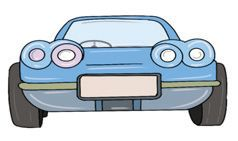
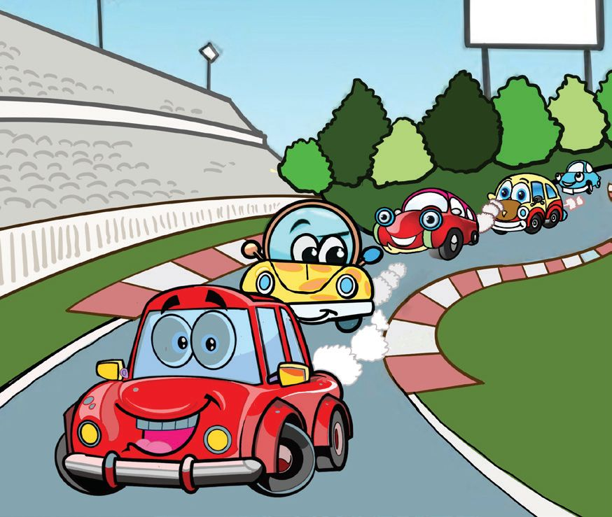
Beyond Thousand
Car Race The car race is going on in the car race circuit. 1000 points are got for finishing each round. The number of rounds completed by each car is given below. Calculate their points: Name of car
1000
Round
Mickey
1
Skybee
5
Buggy
3
Alpha
6
Tomo
7
Flora
4
Freddy
8
Speedy
9
Toto
10
Bonny
2
Point
4000
According to the points got by the cars, write their names in order. Write them in different ways. 23

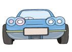

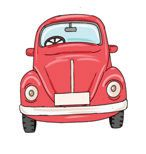


Mathematics
Standard - IV
.........
Let's Climb Up
.........
Write the number on each step ......... .........
6000 ......... ......... .........
2000
1000
1000 1000
1000
1000
1000
1000
Mickey
Bonny
Buggy
Flora
Skybee
Draw the points Skybee car got in the abacus.
Thousands Hundreds
Tens
ones
Five of thousands make five thousand.
24
Alpha
Tomo
Freddy
Speedy
Toto
Draw the points Speedy car got in the abacus.
Thousands Hundreds
Tens
ones
Nine of thousands make nine thousand.


Beyond Thousand
What about twenty of thousands?
Ten of thousands make ten thousand.
Write The Sums Ten (10)
Hundred (100)
Thousand (1000)
Ten thousand (10000)
5+5
50 + 50
500 + 500
5000 + 5000
6+4 7+3 80 + 20
Speedometer Before the race, Toto car had done 1000 kilometres. One lap of the race is 1 kilometre.
Complete The Table Lap
In Speedometer
1
1000 + 1 = 1001
2
1000 + 2 = 1002
.................
............................
.................
............................
.................
............................
.................
............................
.................
............................
What would be the speedometer reading after 11 laps?
After 15 laps?
After 25 laps?
25

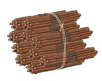
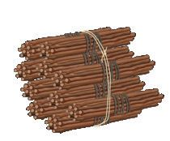
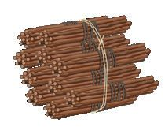
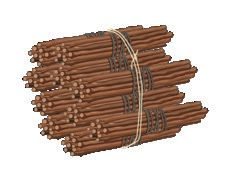


Mathematics
Standard - IV
Write, Draw and Read 10 0 0 1 10 0 1
Thousand and one 1001
Th H
T
O
Thousand and two 1002
Th H
T
O
Thousand Four
Th H
T
O
Thousand Six
Th H
T
O
Thousand Five
Th H
T
O
Thousand Nine
Th H
T
O
Thousand Seven
Th H
T
O
Thousand Eight
Th H
T
O
Thousand Ten
Th H
T
O
Thousand One
Thousand Two
1000 and 1 1000 and 2
Th - Thousand, H - Hundred, T - Ten, O - One 26

Beyond Thousand
Combining with Thousand 1000 + 100
1000 + 10
1 0 00
100
1 0 00
10
1 1 00
Thousand and hundred
1 0 10
Thousand and ten
2000 + 200
3000 + 40
3000 + 5
1000 + 300 + 30
Thousand three hundred and thirty
5000 + 30 + 3
8000 + 300 + 3
6000 + 700 + 40 + 8
How many numbers are there from 1000 to 1200?
27


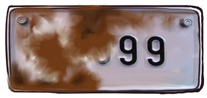
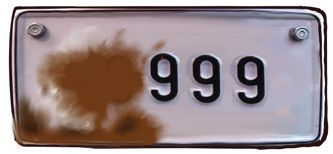
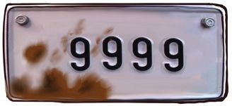
Mathematics
Standard - IV
Numbers and Words Numbers
In words
5250
Seven thousand seven hundred and seven 9018
Nine thousand and nine
Number Cards See the number cards. Write the four-digit numbers that can be made with them.
3
5
8
1
How many numbers start with 5? How many numbers have 8 in the ten’s place ? Write these numbers in order, starting from the smallest, in your notebook.
Reading The Number Speedy car’s number plate is covered in mud. Number now seen When cleaned a bit After cleaning some more When almost cleaned 28
How Pretty ! 9 +1 =
10
99 + 1 = ................ 999 + 1 = ................ 9999 + 1 = ................


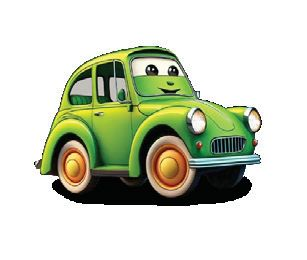
Beyond Thousand
Mud Race
Play Mud Race with your friends. Use a dice with numbers 100, 200, 300..., 600. Move the car to the number thrown. If you land on a bridge, you can move across to go forward; if you land on a pit, you slide backwards. The first to reach 11000 wins.
t
r ta
S
400 100 00 2
Look at the picture on the first page of this lesson. Write the distances on the last two boards.
29


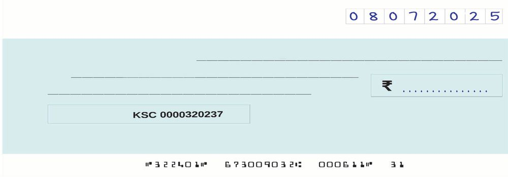
Mathematics
Standard - IV
Gift
Toto won the race. Got a trophy and a cash prize. The money was given as a cheque. Write the amount in the cheque in numbers. Thiruvananthapuram Branch Thiruvananthapuram 695 011 IFSC KSC0001234
Date
Month
Year
Toto Rupees Ninety thousand nine hundred and ninety nine only Pay
Account No.
Signature
Valid for three months only from the date
Distance Travelled The distance each car travelled is given below. Number
Car
Distance (Kilometers)
1
Mickey
8546
2
Bonny
7982
3
Speedy
6375
Number
Car
4 5 6
Freddy Flora Toto
Distance (Kilometers)
5114 6735 8564
Tabulate the cars according to the distances they have travelled, with the car which travelled most at the beginning and the car which travelled the least at the end. Number
30
Name of the car
Distance (Kilometers) In numbers In words


Beyond Thousand
Buggy Car's Number Take one bead from the thousand’s place in the abacus and put in the one’s place. What is the number now? Buggy car’s number is the difference of the first number in the abacus and the number in it now.
Decreased by 1000 Increased by 1
What is the number?
Thousands Hundreds
Adding One More
Tens
ones
What is the number in the abacus?
Ten thousand Thousands Hundreds
Tens
ones
What is the number got by adding one to it?
Tomo Car in Workshop Tomo car was taken to a workshop
for repairs after the race. 3500 rupees was spent to change the battery, 2500 rupees for engine work and 4000 rupees for painting. What is the total amount spent?
What I understood from reading the problem
Total amount spent 31

Mathematics
Standard - IV
On a Tour Toto car is being readied for an all India tour. All four tyres have to be changed. The price of one tyre is 2500 rupees. How much money is needed for four tyres?
Bonny is an electric car. The amounts paid for recharge during its
all India tour are given below. Calculate the total amount. 1
2
3
3500 rupees
2000 rupees
3000 rupees
How I calculated
Continue The Pattern 1.
500, 1000, 1500, .........., .........., .........., .........., .........., ..........
2.
4000, 6000, 8000, .........., .........., .........., .........., .........., ..........
3.
7628, 7728, 7828, .........., .........., .........., .........., .........., ..........
4.
2222, 3333, 4444, .........., .........., .........., .........., .........., ..........
5.
9400, 9300, 9200, .........., .........., .........., .........., .........., ..........
6.
3021, 4132, 5243, .........., .........., .........., .........., .........., ..........
32


Beyond Thousand
My Patterns
............,
............,
............
............
............
............,
............,
............
............
............
............,
............,
............
............
............
............,
............,
............
............
............
1. For the race, the organising committee had given numbers from
5000 to 5050 to the cars. How many cars were in the race?
2. Write four-digit numbers using all the digits 5, 4, 0, 7. How many can you write? Draw the largest number in an abacus. Write this number in words. 3. Write all numbers from 9999 to 10100 which have zero in the one’s place. 4. Complete the patterns below: (A)
10150, 10200, 10250, .........., .........., .........., .........., ..........
(B)
1500, 2600, 3700, .........., .........., .........., .........., ..........
(C)
14500, 15250, 16000, .........., .........., .........., .........., ..........
5. Who am I?
• A number between 4000 and 5000. • The number in the one’s place is double the number in the thousand’s place. • The number in the ten’s place is half of the number in the thousand’s place. • The sum of the digits is 19.
33


Mathematics
Standard - IV
6. Find the number
•
Starting from 9999, if we subtract 1000 again and again, what would be the 8th number?
•
If we subtract 100 instead, what would be the 5th number?
Make a question like this and share it with your friends. 7. Among the numbers between 1000 and 1100, how many num-
bers end in zero?
8. If we write numbers from 1 to 50, how many times would we write 2? •
What if we write up to 100?
•
If we count the 3’s instead of the 2’s, would the number be the same?
Investigation Write all two-digit numbers that can be formed with the dig-
its 1 and 2, without repetition. Count them and write their number.
Write all three-digit numbers that can be formed with the
digits 1, 2 and 3, without repetition. Count them and write their number.
Write all four-digit numbers that can be formed with the dig-
its 1, 2, 3 and 4, without repetition. Count them and write their number.
Write your findings in your notebook.
34